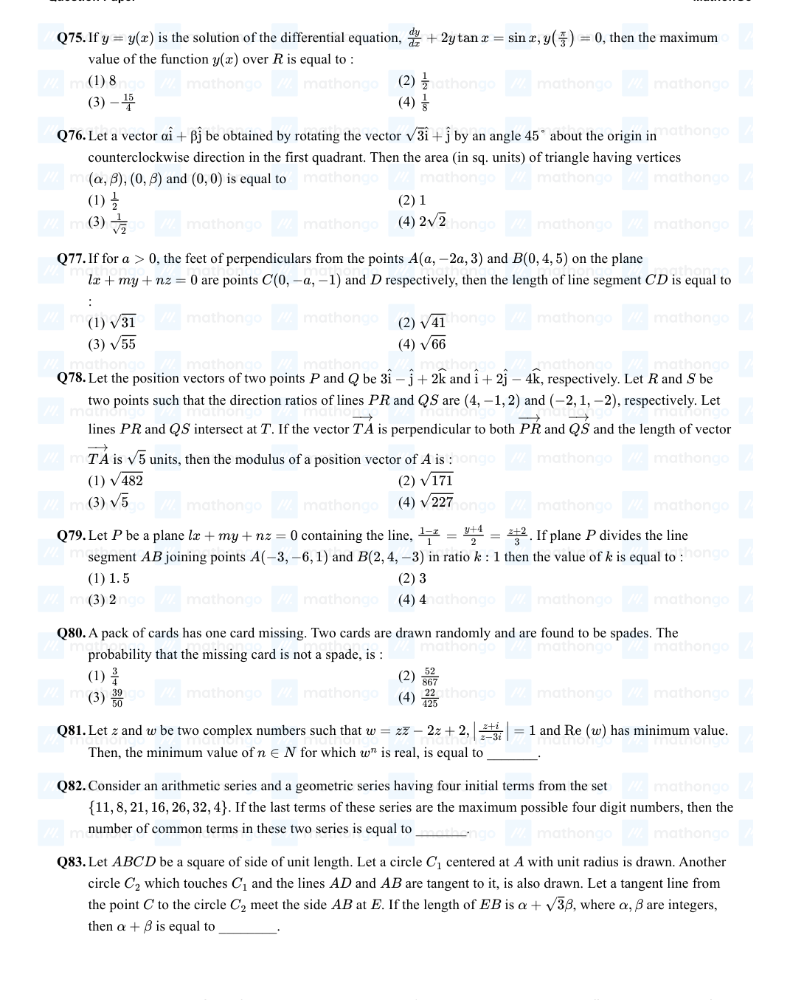

∑ Binomial Theorem
99
Total Questions
5
Years
2
Clusters
Question Clusters
MATH-BINOTHEO-EXPANSION_GENERAL_TERM
Binomial Theorem: Binomial Expansion, General Term & Middle Term
MATH-BINOTHEO-BINOMIAL_COEFFICIENTS_PROPERTIES
Binomial Theorem: Properties of Binomial Coefficients & Series
Year-wise Frequency
| Year | Questions | Frequency |
|---|---|---|
| 2021 | 25 | |
| 2022 | 14 | |
| 2023 | 38 | |
| 2024 | 22 | |
| 2025 | 0 |
Questions
Showing first 50 of 99 questions.
Q83 (2021 Shift 2)
If the sum of the coefficients in the expansion of ( 𝑥+ 𝑦) 𝑛 is 4096, then the greatest coefficient in the expansion is _____.
Answer:
924MATH-2021-0101-S2-Q083
Q63 (2021 Shift 1)
If n is the number of irrational terms in the expansion of + , then (n −1) is divisible by :
MATH-2021-0101-S1-Q063
Q69 (2021 Shift 1)
Consider three observations a, b and c such that b = a + c . If the standard deviation of a + 2, c + 2 is d , then which of the following is true?
MATH-2021-0101-S1-Q069
Q80 (2021 Shift 2)
Let A denote the event that a 6 -digit integer formed by 0, 1, 2, 3, 4, 5, 6 without repetitions, be divisible by 3 . Then probability of event is equal to : A
MATH-2021-0101-S2-Q080
Q64 (2021 Shift 1)
If the fourth term in the expansion of (x + xlog2 x) 7 is 4480, then the value of x where x ∈N is equal to:
MATH-2021-0101-S1-Q064
Q81 (2021 Shift 2)
If and are two polynomials such that the polynomial P(x) f(x3) xg(x3) is divisible by f(x) g(x) = + x2 + x + 1 , then P(1) is equal to ___ . ∑10
Answer:
0MATH-2021-0101-S2-Q081
Q83 (2021 Shift 2)
The [ x+1 x−1 ] 10 term independent of x in the expansion of x2/3−x1/3+1 − x−x1/2 , x ≠1 , is equal to ___.
Answer:
210MATH-2021-0101-S2-Q083
Q84 (2021 Shift 2)
Let nCr denote the binomial coefficient of xr in the expansion of x)n . If (1 + ∑10 k=0(22 + 3k)nCk = α. 310 + β ⋅210, α, β ∈R , then α + β is equal to ___ . [ 2 −1 ]
Answer:
19MATH-2021-0101-S2-Q084
Q64 (2021 Shift 1)
The coefficient of x256 in the expansion of (1 −x)101(x2 + x + 1)100 is:
MATH-2021-0101-S1-Q064
Q82 (2021 Shift 1)
The number of rational terms in the binomial expansion of (4 1 + 5 1 6 ) is_______. 4
Answer:
21MATH-2021-0101-S1-Q082
Q83 (2021 Shift 1)
If the constant term, in binomial expansion of (2xr + 1 ) 10 is 180, then is equal to ____________. x2 r
Answer:
8MATH-2021-0101-S1-Q083
Q81 (2021 Shift 1)
The total number of numbers, lying between 100 and 1000 that can be formed with the digits 1, 2, 3, 4, 5, if the repetition of digits is not allowed and numbers are divisible by either 3 or 5, is
Answer:
32MATH-2021-0101-S1-Q081
Q88 (2021 Shift 1)
Let f(x) be a polynomial of degree 6 in x, in which the coefficient of x6 is unity and it has extrema at x = −1 and = 1 . If lim f(x) = 1, then 5 ⋅f(2) is equal to x x→0 x3
Answer:
144MATH-2021-0101-S1-Q088
Q82 (2021 Shift 2)
If the remainder when x is divided by 4 is 3 , then the remainder when (2020 + x)2022 is divided by 8 is ___ . −3)2
Answer:
1MATH-2021-0101-S2-Q082
Q84 (2021 Shift 1)
The ratio of the coefficient of the middle term in the expansion of ( 1 + 𝑥) 20 and the sum of the coefficients of two middle terms in expansion of ( 1 + 𝑥) 19 is .
Answer:
1MATH-2021-0101-S1-Q084
Q85 (2021 Shift 1)
The term independent of in the expansion of 𝑥+ 1 𝑥- 1 10 where is equal to 𝑥 𝑥2 / 3 - 𝑥1 / 3 + 1 - 𝑥- 𝑥1 / 2 , 𝑥≠0, 1
Answer:
210MATH-2021-0101-S1-Q085
Q62 (2021 Shift 2)
The sum of all those terms which are rational numbers in the expansion of (2 1 + 3 1 ) 12 is: 3 4
MATH-2021-0101-S2-Q062
Q63 (2021 Shift 2)
If the greatest value of the term independent of x in the expansion of (x sin α + a cos x α is (5!)2 10! , then the value of a is equal to:
MATH-2021-0101-S2-Q063
Q84 (2021 Shift 2)
If the co-efficient of x7 and x8 in the expansion of (2 + x ) are equal, then the value of n is equal to : 3
Answer:
55MATH-2021-0101-S2-Q084
Q64 (2021 Shift 1)
If 20Cr is the co-efficient of xr in the expansion of (1 + x)20 , then the value of ∑20 r=0 r2(20Cr) is equal to:
MATH-2021-0101-S1-Q064
Q80 (2021 Shift 2)
A seven digit number is formed using digits 3, 3, 4, 4, 4, 5, 5 . The probability, that number so formed is divisible by 2 , is
MATH-2021-0101-S2-Q080
Q82 (2021 Shift 1)
A number is called a palindrome if it reads the same backward as well as forward. For example 285582 is a six digit palindrome. The number of six digit palindromes, which are divisible by 55, is ________.

Answer:
100MATH-2021-0101-S1-Q082
Q64 (2021 Shift 2)
10 A possible value of x, for which the ninth term in the expansion of {3log3 √25x−1+7 + 3(−1 8 ) log3(5x−1+1)} in the increasing powers of 3(−1 8 ) log3(5x−1+1) is equal to 180, is :
MATH-2021-0101-S2-Q064
Q83 (2021 Shift 1)
If ( 36 )k is the term, independent of x, in the binomial expansion of ( x −12 )12, then k is equal to 44 4 x2
Answer:
55MATH-2021-0101-S1-Q083
Q83 (2021 Shift 2)
If the coefficient of in the expansion of ( 𝑎+ 2𝑏+ 4𝑎𝑏) is 𝐾· then 𝐾 is equal to
Answer:
315MATH-2021-0101-S2-Q083
Q64 (2022 Shift 1)
The remainder when 32022 is divided by 5 is
MATH-2022-0101-S1-Q064
Q62 (2022 Shift 1)
If + + … + = 310, then the remainder when 𝐾 is divided by 6 is 2 · 310 22 · 39 210 · 3 210 ·
MATH-2022-0101-S1-Q062
Q84 (2022 Shift 1)
Let 𝐶𝑟 denote the binomial coefficient of 𝑥𝑟 in the expansion of 1 + 𝑥10. If for 𝛼, 𝛽∈𝑅, 𝐶1 + 3 · 2𝐶2 + 5 · 3𝐶3 + … upto 10 terms = 𝛼× 211 (𝐶0 + 𝐶1 + 𝐶2 + … upto 10 terms) then the value of 2𝛽- 1 2 3 𝛼+ 𝛽 is equal to _____. 𝜋 7𝜋
Answer:
286MATH-2022-0101-S1-Q084
Q65 (2022 Shift 2)
The coefficient of 𝑥101 in the expression 𝑥500 𝑥499 𝑥25 𝑥498 𝑥500, is 5 + + 𝑥5 + + + + … … + 𝑥> 0
MATH-2022-0101-S2-Q065
Q82 (2022 Shift 2)
If the sum of the co-efficients of all the positive even powers of 𝑥 in the binomial expansion of 2𝑥3 + 3 is 𝑥 510 - 𝛽· 39, then 𝛽 is equal to _____.
Answer:
83MATH-2022-0101-S2-Q082
Q62 (2022 Shift 1)
The remainder when (2021)2023 is divided by 7 is
MATH-2022-0101-S1-Q062
Q85 (2022 Shift 2)
If 40C0 + 41C1 + 42C2 + ⋯+ 60C20 = n × 60C20 where m & n are co-prime, then m + n is equal to
Answer:
102MATH-2022-0101-S2-Q085
Q83 (2022 Shift 1)
If ( ) 60 the coefficient of x10 in the binomial expansion of √x + √5 is 5kl , where l, k ∈N and l is coprime to 5 1 4 x 1 3 5 , then k is equal to ______.
Answer:
5MATH-2022-0101-S1-Q083
Q82 (2022 Shift 2)
If the sum of the coefficients of all the positive powers of x , in the binomial expansion of (xn + 2 ) 7 is 939 , x5 then the sum of all the possible integral values of n is
Answer:
57MATH-2022-0101-S2-Q082
Q83 (2022 Shift 1)
The number of positive integers k such that the constant term in the binomial expansion of 12 (2x3 + 3 ) , x ≠0 is 28 ⋅l , where l is an odd integer, is ______. xk
Answer:
2MATH-2022-0101-S1-Q083
Q64 (2022 Shift 2)
The term independent of x in the expression of (1 −x2 + 3x3)( 5 x3 − 1 ) 11 , x ≠0 is 2 5x2
MATH-2022-0101-S2-Q064
Q63 (2022 Shift 1)
If the constant term in the expansion of (3x3 −2x2 + 5 ) 10 is 2k. l , where l is an odd integer, then the value x5 of k is equal to
MATH-2022-0101-S1-Q063
Q81 (2022 Shift 2)
The total number of four digit numbers such that each of the first three digits is divisible by the last digit, is equal to ______.

Answer:
1086MATH-2022-0101-S2-Q081
Q83 (2022 Shift 2)
Let (2x 1 ) 15 the coefficients of x−1 and x−3 in the expansion of 5 − 1 1 , x > 0 , be m and n respectively. If r x 5 is a positive integer such mn2 = 15Cr.2r , then the value of r is equal to ______.
Answer:
5MATH-2022-0101-S2-Q083
Q83 (2023 Shift 1)
The number of 3-digit numbers, that are divisible by either 2 or 3 but not divisible by 7 is _____ .

Answer:
514MATH-2023-0101-S1-Q083
Q84 (2023 Shift 1)
The remainder when 19200 + 23200 is divided by 49, is _____ .
Answer:
29MATH-2023-0101-S1-Q084
Q64 (2023 Shift 1)
If 1 𝑛 the ratio of the fifth term from the beginning to the fifth term from the end in the expansion of 4 √2 + 4 is 1, then the third term from the beginning is: √3 √6:
MATH-2023-0101-S1-Q064
Q82 (2023 Shift 1)
The coefficient of 𝑥18 in the expansion of 𝑥4 - 1 is ____________ 𝑥3
Answer:
5005MATH-2023-0101-S1-Q082
Q68 (2023 Shift 2)
Among the statements : (S1) 20232022 −19992022 is divisible by . : 8 (S2) : 13(13)n −11n −13 is divisible by 144 for infinitely many n ∈N
MATH-2023-0101-S2-Q068
Q66 (2023 Shift 1)
Let SK = 1+2+...+K and ∑n S 2j = n (Bn2 + Cn + D) where A, B, C, D ∈ N and A Has least value K j=1 A then
MATH-2023-0101-S1-Q066
Q67 (2023 Shift 1)
if the coefficients of three consecutive terms in the expansion of (1 + are the ratio 1 : 5 : 20 then the coefficient of the fourth term is
MATH-2023-0101-S1-Q067
Q68 (2023 Shift 1)
Let [t] denote the greatest integer ≤t . if the constant term in the expansion of (3x2 − 1 ) 7 is α then [α] is 2x5 equal to _____
MATH-2023-0101-S1-Q068
Q80 (2023 Shift 1)
If aα is the greatest term in the sequence an = n3 , n = 1, 2, 3. . . . , then α is equal to ______ n4+147
MATH-2023-0101-S1-Q080
Q66 (2023 Shift 2)
The absolute difference of the coefficients of x10 and x7 in the expansion of (2x2 1 11 is equal to + 2x )
MATH-2023-0101-S2-Q066
Q67 (2023 Shift 2)
25190 −19190 −8190 + 2190 is divisible by
MATH-2023-0101-S2-Q067